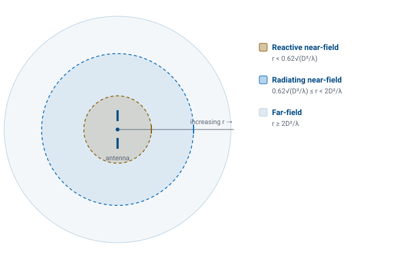

L5 - Field Regions#
Field Regions
Where you stand changes what you see.
Lesson 5 · Antennas, Phased Arrays, and Radar Systems · Dr. Neil Rogers
Learning Objectives
- I can distinguish the reactive near-field, radiating near-field, and far-field regions by what the fields are actually doing in each.
- I can calculate the boundaries between the three regions for a given antenna size and wavelength.
- I can explain the phase-error criterion behind the far-field distance, and why you must measure an antenna in its far field.
Lesson 4 looked into the antenna terminals. Now we step back out into the space around the antenna and ask: as you walk away from the antenna, at what point do the fields settle into the clean, predictable radiation pattern from Lesson 2 — and what are they doing before that?
L2 — pattern, directivity, gain. Every one of those numbers was quoted far away, without ever saying so.
The space around any antenna divides into three regions. They are not sharp walls; the fields transition gradually. But the boundaries are worth knowing, because where you stand changes what you measure.
The three regions
Reactive near field: stored energy. Nothing leaves.
Radiating near field: energy leaves, but the pattern is still forming.
Far field: the pattern you measure, and the one every spec quotes.

Reactive near-field
Right up against the antenna, stored energy dominates the fields, not radiation. Twice in every cycle the field fills the space around the antenna and comes straight back. Nothing escapes.
The period is \(T = 1/f\), and the picture is the field around a charged capacitor or a current-carrying inductor. These are the terms that fall off fast, as \(1/r^2\) and \(1/r^3\), so they vanish quickly with distance. A receiver here would load the antenna and change its behavior, which is also why you keep objects away from a transmitting antenna’s immediate vicinity.
Radiating near-field (Fresnel region)
A little farther out, energy leaves the antenna, but the shape of the pattern still depends on how far away you are. The wavefront is curved.
Measure a pattern here and you have measured this range, not the antenna.
Different parts of the antenna are at meaningfully different distances from your observation point, so their contributions add up with distance-dependent phase, and the angular pattern keeps changing as you move out.
Far-field (Fraunhofer region)
Far enough away, the antenna is a point source: the pattern shape stops changing with distance.
the fields fall off as \(1/r\), the power as \(1/r^2\)
\(\mathbf{E}\), \(\mathbf{H}\), and the direction of travel are mutually perpendicular: locally a plane wave
Measure the pattern at \(100\ \text{m}\) or \(1\ \text{km}\) and you get the same angular pattern, just weaker. This is the region every antenna specification implicitly refers to: “the gain is 15 dBi” means in the far field.
Where the regions come from: the fields of a short dipole
The three regions fall straight out of the exact fields of the simplest antenna: an infinitesimal dipole, a current element \(Idl\) along \(\hat{\mathbf z}\) with \(dl \ll \lambda\).
That is the closed-form solution of Maxwell’s equations for the element, written in spherical coordinates and in phasor form: the \(e^{-jkr}\) is carried along as in Lesson 2, \(k = 2\pi/\lambda\), and the \(e^{j\omega t}\) is suppressed throughout, so every field here is an amplitude and a phase rather than an instantaneous value. The regions are not a convention someone imposed.
The near field is just this, superposed
with \(E_\phi = H_r = H_\theta = 0\). Current elements like this make up every antenna, so whatever these fields do, real antennas do too.
The near field of any antenna is just this, superposed.
There is a third component the slide leaves out — a purely radial field with no radiation term at all:
It falls as \(1/r^2\) at best, so it is a near-field quantity only — it contributes nothing to the pattern you measure far away.
Read the fields by their powers of r
Pull the \(1/r\) out front of \(E_\theta\) and the bracket holds three terms. \(kr\) alone sets their relative sizes:
What each term is, and where it wins
Term |
Falls off as |
Physical origin |
Wins where |
|---|---|---|---|
Radiation |
\(1/r\) |
the escaping wave, Lesson 2’s far field |
\(kr \gg 1\) |
Induction |
\(1/r^2\) |
Biot–Savart field of the current |
near \(kr \sim 1\) |
Electrostatic |
\(1/r^3\) |
quasi-static field of the charge \(\pm q\) at the tips |
\(kr \ll 1\) |
Those are the three regions, hiding inside one equation. Near \(kr \sim 1\) the induction term is comparable to the other two.
The crossover is a single number
The radiation term (size \(\propto 1\) inside the bracket) and the induction term (size \(\propto 1/kr\)) are equal when
Read that carefully, because it is the single most misquoted number in the subject. At \(kr = 1\) all three terms are the same size — that is all it says. Inside \(\lambda/2\pi\) the stored (\(1/r^2\), \(1/r^3\)) terms take over and blow up as you approach the antenna. Outside it the radiation term does not suddenly stand alone; it merely starts to dominate increasingly, because each reactive term keeps shedding another factor of \(1/kr\). Dividing the bracket through by the radiation term makes the bookkeeping obvious — the three sizes are \(1 : 1/kr : 1/(kr)^2\):
\(kr\) |
\(r\) |
radiation : induction : electrostatic |
|---|---|---|
\(1\) |
\(0.16\lambda\) |
\(1 : 1 : 1\) |
\(6\) |
\(\approx 1\lambda\) |
\(1 : 0.17 : 0.03\) |
\(10\) |
\(\approx 1.6\lambda\) |
\(1 : 0.1 : 0.01\) |
So the reactive terms are negligible only for \(kr \gg 1\). They fall below about \(10\%\) near \(kr \approx 10\), i.e. \(r \approx 1.6\lambda\); at one wavelength out induction is still \(17\%\). Rule of thumb: \(kr = 1\) is the crossover, not the start of the far field — for a small antenna, give it a few wavelengths before you trust the pattern. The \(\lambda/2\pi\) figure quoted for small antennas in the next section is this crossover, now derived rather than asserted, and the \(0.62\sqrt{D^3/\lambda}\) boundary is the same idea generalized to an antenna of finite size \(D\).
Why “reactive” is the literal, correct word
Stored energy that never leaves is reactive power, the same reactive power you met at the terminals in Lesson 4.
Complex radial Poynting vector \(\tfrac12 E_\theta H_\phi^{*}\): a real part \(\propto 1/r^2\) and an imaginary part \(\propto 1/r^5\)
Radiation is radiation at every distance.
The reactive power now lives in the surrounding field, and the near field carries nothing away. All of this is a power factor, read exactly the way you read one for a load: \(\cos\) of the angle between \(E\) and \(H\). The real part is outward power and contains no near-field terms at all; the imaginary part is the stored energy sloshing out and back twice per cycle.
Multiplying \(E_\theta\) by \(H_\phi^{*}\) term by term, everything cancels except two pieces:
Two things to read off this:
The real part — genuine outward power — falls off as \(1/r^2\) (the inverse-square law) and does not contain the near-field terms at all — no cross-term between a \(1/r\) field and a \(1/r^2\) field survives the algebra.
The imaginary part — reactive, non-transported power — falls off as \(1/r^5\). It is negligible far out but overwhelming close in, and the factor of \(j\) says \(\mathbf E\) and \(\mathbf H\) are \(90^{\circ}\) out of phase there. That is where the time the phasors hid comes back. Restore the \(e^{j\omega t}\), take the real part, and with the two fields a quarter turn apart the instantaneous radial flow goes as \(\sin 2\omega t\): outward for a quarter period, back for the next quarter, twice in every cycle of the drive current, averaging to exactly zero. Nothing leaves. That is the “sloshing” of the qualitative picture, made exact — and note the rate, \(2\omega\) rather than \(\omega\), which is the same doubling you get for reactive power at a circuit’s terminals.
The minus sign (\(-j\)) even tells you the stored energy is predominantly electric — which fits, because a short dipole is capacitive at its terminals. Its large negative reactance from Lesson 4 and this near-field electric energy are the same physics, seen from the outside versus the inside.
Power factor, in the field
Swap \(E\) for \(v\) and \(H\) for \(i\) and this is the \(p(t) = v i\) picture from circuits, unchanged. Left: the two waveforms over two periods — the only thing \(kr\) changes is the angle between them. Right: their product, the power crossing that radius instant by instant, with its average dashed across.
Read \(Z_w = E/H\) as the load. Far out it is \(377\ \Omega\) at \(0^\circ\), power factor \(1\): free space is a resistor, the flow never reverses, and the green area is all there is. Close in the angle swings to \(-90^\circ\) and the power factor goes to \(0\): a pure reactance, green and red areas equal, average on zero — out and back twice a cycle, nothing leaving. The sign is negative, the same capacitive sign the short dipole shows at its own terminals in Lesson 4.
Nothing about the phasors moves as you slide. Only the angle between them does.
A preview from the practice set
The practice set for this lesson opens with a which-term-dominates part: you evaluate the ratio \(1 : 1/kr : 1/(kr)^2\) at \(kr = 0.1\) and \(kr = 10\) and name the winner in each. Do it by hand once and the crossover stops being a number to memorize.
Interactive — the three terms and their crossover
Slide the observation point in and out. The three field terms are straight lines on a log–log plot (slopes \(-1\), \(-2\), \(-3\)); they all cross at \(kr = 1\), i.e. \(r = \lambda/2\pi\). To the left, the \(1/r^3\) stored field runs away — the reactive near field. To the right the radiation term takes over, and its lead over the other two grows tenfold for every decade you move out — which is why “negligible” takes until \(kr \approx 10\), not \(kr = 1\).
The boundaries
Let \(D\) be the antenna’s largest dimension and \(\lambda\) the wavelength.
Region, extent, and fields
Region |
Extent |
Fields |
|---|---|---|
Reactive near-field |
\(r < 0.62\sqrt{D^3/\lambda}\) |
stored, non-radiating; \(1/r^2\), \(1/r^3\) |
Radiating near-field |
\(0.62\sqrt{D^3/\lambda} \le r < 2D^2/\lambda\) |
radiating, but pattern varies with \(r\); curved wavefront |
Far-field |
\(r \ge 2D^2/\lambda\) |
pattern fixed; \(1/r\); locally plane wave |
These formulas apply to electrically large antennas (\(D > \lambda\)), where the \(2D^2/\lambda\) distance is the meaningful one. For an electrically small antenna the reactive near-field simply extends out to about \(\lambda / 2\pi\) — precisely the \(kr = 1\) crossover we derived from the dipole fields above. Take the larger of the two distances:
But do not read \(\lambda/2\pi\) as “the far field begins here”. At that radius the stored terms are merely equal to the radiation term, not gone. In practice give a small antenna a few wavelengths — \(kr\) of order 10 — before you trust its pattern.
Where the far-field distance comes from
\(2D^2/\lambda\) is a phase-error criterion. A spherical wavefront from a source at distance \(r\) reaches the edge of an aperture of size \(D\) later than its center, by
Picture a point source a distance \(r\) away, radiating onto the aperture. A plane wave, by definition, would have no such path difference, and the plane-wave limit is exactly what you earn once this criterion is met.
The phase-error budget
The agreed tolerance is \(\Delta \le \lambda/16\), a maximum phase error of \(22.5^{\circ}\) across the aperture:
Inside this distance the phase across the aperture curves enough to distort the pattern; beyond it, the wavefront is “flat enough” and the pattern is stable. That is the whole content of the criterion: a statement about how flat a sphere looks over a finite width, not about where radiation starts.
Worked example
A \(D = 1.2\ \text{m}\) reflector at \(f = 10\ \text{GHz}\), so \(\lambda = 0.03\ \text{m}\) and \(D/\lambda = 40\).
reactive near field ends at \(\approx 4.7\ \text{m}\)
far field begins at \(96\ \text{m}\)
a conventional range needs almost a hundred meters of separation
The antenna is electrically large: \(D/\lambda = 1.2 \div 0.03 = 40\).
The radiating near field runs from \(4.7\ \text{m}\) to \(96\ \text{m}\). Notice the \(D^2\): go to 20 GHz and the far field starts at 192 m for the same dish.
Interactive — field-region explorer
Set the antenna’s largest dimension \(D\) and the frequency, and watch the three region boundaries slide along the distance axis in the top panel. Then drag the range \(r\): the lower-left panel redraws the spherical wavefront arriving over the aperture — its curvature is drawn to scale with the phase error, not with \(r\) itself — and the lower-right panel plots the phase error it produces across \(D\), turning green the moment that error drops under the \(22.5^{\circ}\) limit. Notice that green arrives exactly as \(r\) crosses \(2D^2/\lambda\), and that doubling \(D\) pushes it four times farther out — the \(D^2\) in the formula, on screen. Hold \(D\) and double \(f\): it doubles.
Why the far-field distance matters
The far-field distance sets the size of your test range.
The antenna under test must be in the source’s far field.
A large dish at high frequency: hundreds of meters.
Near-field scanning: measure close in, propagate out mathematically.
To measure an antenna’s true pattern, gain, and sidelobes you need that separation, reflection-free, which is often impractical and sometimes impossible indoors. That is exactly why near-field scanning exists: you measure the fields on a surface close to the antenna, in the radiating near field, and compute the far field from them. You will see this in Module 2’s measurement lessons. It only works because the near-field distribution completely determines the far-field pattern, which is the subject of the next lesson.
Key point
Where you stand changes what you see. Close in, the field is stored energy. Farther out it radiates, but the pattern is still forming. Only beyond \(2D^2/\lambda\) does the antenna show its true pattern. Every spec assumes the far field.
Summary
One dipole equation holds all three regions: \(1 : 1/kr : 1/(kr)^2\).
\(kr = 1\) (\(r = \lambda/2\pi\)) is where the terms are equal, not the far field. Allow a few wavelengths.
Far field: \(r \ge 2D^2/\lambda\), from a \(22.5^{\circ}\) phase-error budget.
Reactive near field ends at \(0.62\sqrt{D^3/\lambda}\).
Symbol / idea |
What it is |
Number to remember |
|---|---|---|
Three field terms |
One dipole equation holds all three regions |
\(1 : 1/kr : 1/(kr)^2\) |
\(kr = 1\) crossover |
Where all three terms are equal — not where the far field starts |
\(r = \lambda/2\pi \approx 0.16\lambda\) |
True far field |
Reactive terms actually negligible |
\(kr \gg 1\); under \(10\%\) near \(kr \approx 10\) (\(r \approx 1.6\lambda\)), so allow \(r \gtrsim \lambda\) and preferably a few \(\lambda\) |
Reactive near-field edge |
Inner boundary for an electrically large antenna |
\(r = 0.62\sqrt{D^3/\lambda}\) |
Far-field distance |
Outer boundary; pattern stops changing with \(r\) |
\(r \ge 2D^2/\lambda\) |
Phase-error tolerance |
What the criterion \(2D^2/\lambda\) comes from |
\(\Delta \le \lambda/16\), i.e. \(\pi/8 = 22.5^{\circ}\) |
Worked dish |
\(D = 1.2\ \text{m}\) at \(10\ \text{GHz}\) (\(\lambda = 0.03\ \text{m}\)) |
reactive to \(4.7\ \text{m}\); far field beyond \(96\ \text{m}\) |
Practice
Where this is going
You now know where the far-field pattern lives and how far away it starts. Next, Lesson 6 (Radiation Integrals) answers what that pattern is: from the current distribution on the antenna to the far-field pattern, directly.
The radiation integrals are the mathematical machinery behind everything we have described qualitatively so far.
Watch for one specific move in that derivation. Expanding the distance from a source point to the observer gives a linear term and a quadratic one, and throwing the quadratic term away is what defines the far field. That discarded term is the path difference \(D^2/8r\) from this lesson, and the license to drop it is the \(\pi/8\) tolerance — so “the far-field approximation” in Lesson 6 and \(r \ge 2D^2/\lambda\) here are the same statement, one written as an integral and one as a distance.
Same number, two stories. That is usually a sign you have the physics right.